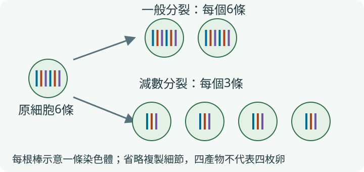
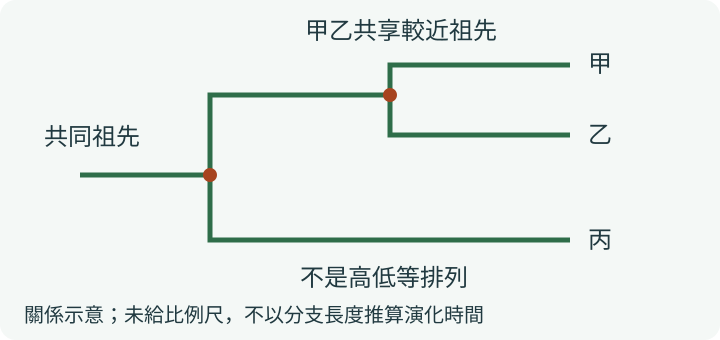
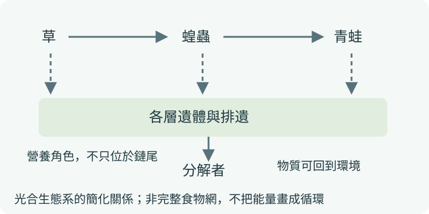

生殖與生命延續
細胞數如何增加？配子從哪裡來？受精後形成什麼？
NATURAL SCIENCE・BOOK 2
這冊用一條線串起來：細胞分裂讓生命延續，遺傳造成相似與差異，演化形成多樣生物；生物再透過食物、競爭與物質循環連成生態系。讀懂關係與層次，比把所有生物名字背一遍更重要。
盧老師自然複習・資料核對2026-10-27
網頁版：https://addielu-phy.github.io/ai-coding-tools-free-comparison/science/jhs-science-b4-b2/book2/student/
七年級下學期｜從細胞一路看見生態系
細胞數如何增加？配子從哪裡來？受精後形成什麼？
基因如何傳給下一代？同一家庭為何仍有差異？
先有可遺傳差異，環境再影響誰較能留下後代
用可比較的構造與親緣分類，不靠名字、顏色或棲地猜
個體組成族群，不同族群組成群集，再與非生物環境連結
找出壓力來源、作用機制與證據，再選可持續的行動
分類式心智圖：連結表示主題歸屬，不把所有分支當作因果或時間順序。
以108課綱及康軒、翰林、南一的七下共通內容整合成六大主題，不等同各出版社章次。七上細胞構造、營養、運輸、協調與恆定是前置知識，不把第一冊誤列為本冊新增章節。
| 概念 | 一句話抓重點 | 重點卡 |
|---|---|---|
| 細胞分裂與減數分裂 | 以二倍體動物模型比較：一般分裂維持染色體套數，減數分裂形成單套配子。 | 2-01 |
| 無性生殖的方式 | 分裂、出芽、部分孢子與營養繁殖不經配子受精，子代通常與親代近似。 | 2-02 |
| 有性生殖與遺傳組合 | 配子結合形成受精卵；判準是過程，不是一定要兩個不同個體。 | 2-02 |
| 開花植物的生殖 | 授粉到柱頭、受精在胚珠內；胚珠成種子，子房發育成果實。 | 2-02 |
| 動物受精、發育與變態 | 區分體內／體外受精、卵生／胎生與發育歷程，不能只看生活環境。 | 2-02 |
| 人類生殖與胚胎發育 | 受精通常在輸卵管，胚胎著床於子宮；月經週期有個體與時間差異。 | 2-02 |
| 染色體、DNA與基因 | 基因是DNA上的遺傳資訊片段，染色體承載DNA；圖中線條與套數要分開。 | 2-03 |
| 孟德爾與簡單遺傳 | 只有題目明定單基因完全顯性模型時，才直接套用A／a配子表。 | 2-03 |
| 性染色體與機率 | 常見教材XX／XY模型中，卵提供X，精子可能提供X或Y；各次受精分開看。 | 2-03 |
| 變異、突變與環境 | 表現差異可來自基因與環境；突變不保證有利，也不一定能傳給子代。 | 2-04 |
| 選種、組織培養與基因轉殖 | 繁殖、選擇與轉入基因是不同操作；用具體證據評估用途與風險。 | 2-04 |
| 化石與演化證據 | 化石、形態與分子資料可共同提供線索；沒有發現不等於確定從未存在。 | 2-05 |
| 天擇與適應 | 環境影響有不同遺傳特徵者的繁殖成功，族群跨世代組成可能改變。 | 2-05 |
| 共同祖先與親緣樹 | 較近的共同祖先支持較近親緣，不把演化排成低等到高等的單行階梯。 | 2-05 |
| 分類階層、學名與檢索 | 界門綱目科屬種由廣到窄；同屬一定同科，反向不一定。 | 2-06 |
| 原核、原生與病毒 | 細菌和藍綠菌是原核；原生生物有細胞核，病毒沒有細胞構造。 | 2-06 |
| 真菌的特徵 | 真菌有細胞核、無葉綠體，藉吸收取得養分；可為單細胞或多細胞。 | 2-06 |
| 苔蘚、蕨類、裸子與被子植物 | 從維管束、種子與果實分辨，不把孢子當作種子。 | 2-07 |
| 單子葉與雙子葉 | 比較子葉、葉脈、根系等常見組合；部分特徵有例外，勿只靠一項判定。 | 2-07 |
| 常見無脊椎動物 | 以身體構造分群；附肢分節的節肢動物與環節動物不同。 | 2-07 |
| 五大脊椎動物 | 綜合呼吸、體表與生殖等特徵比較；鯨、蝙蝠不能只依游泳或飛行分類。 | 2-07 |
| 個體、族群、群集與生態系 | 族群須同種、同時、同地；生態系還包括非生物環境與交互作用。 | 2-08 |
| 族群變動與估計 | 出生、死亡與遷移影響數量；樣區或標記再捕法須先看估計假設。 | 2-08 |
| 生物間交互作用 | 分辨競爭、捕食、寄生與互利共生；同種生物也可能競爭。 | 2-08 |
| 食物鏈、食物網與營養角色 | 箭頭由被吃者指向取食者；分解者可利用各層的遺體與排遺。 | 2-09 |
| 能量流動、物質循環與污染 | 能量單向流動且可利用量逐級減少；物質循環，特定污染物可能生物放大。 | 2-09 |
| 陸域、水域與臺灣生態系 | 比較溫雨、鹽度、光照與流速等條件，連到森林、淡水、河口與海洋。 | 2-08 |
| 生物多樣性的層次 | 基因、物種與生態系多樣性不是同一個量，不能只以物種總數代表一切。 | 2-10 |
| 棲地、開發與資源使用 | 破壞、破碎化、過度利用與污染可改變生物的生存與繁殖條件。 | 2-10 |
| 原生、特有、外來與入侵 | 特有種是分布限制的概念；外來種不一定入侵，保育類也不等於特有種。 | 2-10 |
| 優養化、暖化與其他污染 | 按因果鏈分清水體缺氧、溫室效應增強、臭氧破洞與酸雨，勿混成一種。 | 2-10 |
| 保育與永續行動 | 保護棲地、合理利用、減少污染並監測效果；用證據比較行動而非只喊口號。 | 2-10 |
題數多的先練，前置觀念仍要補；重要性不只由題數決定。
111–115年每年自然科50題，共250題；本頁按作答核心每題只計一個主題，並排除6題冊次／定義邊界案例。這是本站主題觀察，非官方冊次權重；環境能源含跨冊議題，主題寬窄也不同。0例不代表不考，次數不是下一次命題機率。詳見來源頁的題號與編碼。
查看各年題號、排除規則與官方試卷 →這是依前置知識安排的學習順序，與上方歷年題數排序不同，不是必考保證。
學習目標：能在二倍體動物模型中比較一般分裂與減數分裂。
| 以二倍體動物細胞為例 | 一般細胞分裂 | 減數分裂 |
|---|---|---|
| 主要用途 | 生長、修補等 | 產生單套生殖細胞 |
| 分裂前DNA複製 | 一次 | 一次 |
| 連續分裂次數 | 一次 | 兩次 |
| 典型產物數 | 兩個細胞 | 四個產物；不代表都為可受精卵子 |
| 每個產物的染色體套數 | 通常維持2n | 減為n |

下列為本次自編練習，不是歷屆原題；情境數值為題設或示意，非實測。
學習目標：能比較無性與有性生殖，並追蹤開花植物與人類的生殖位置。
| 過程／例子 | 看見什麼 | 避免混淆 |
|---|---|---|
| 馬鈴薯塊莖營養繁殖 | 從營養器官長成新株 | 地下器官不一定是根 |
| 植物授粉 | 花粉到達柱頭 | 不是花粉直接變成種子 |
| 植物受精後 | 胚珠成種子、子房成果實 | 胚珠與子房不可對調 |
| 人類生殖 | 通常輸卵管受精、子宮著床 | 不是受精一定發生在子宮 |
| 動物發育 | 比較受精、胚胎發育與變態 | 水生不必然體外受精或卵生 |
下列為本次自編練習，不是歷屆原題；情境數值為題設或示意，非實測。
學習目標：能在題目明定的單基因完全顯性模型中，分辨基因型、表現型與機率。
| 名詞／模型 | 應怎麼讀 | 不要誤讀成 |
|---|---|---|
| 基因型AA、Aa、aa | 等位基因的組合 | 肉眼一定能分辨的三種樣子 |
| 完全顯性表現型 | AA與Aa可表現相同 | 所有人類性狀都只有一個基因 |
| 理論機率 | 大量隨機事件的模型比例 | 小家庭一定照固定人數分配 |
| XX／XY教材模型 | 常見染色體組合的受精模型 | 任一家長能意志選擇或應被歸責 |
| 資料題若給ABO規則 | 常見基因組合表示 | 判讀 |
|---|---|---|
| A型 | IAIA或IAi | IA對i顯性 |
| B型 | IBIB或IBi | IB對i顯性 |
| AB型 | IAIB | IA與IB可共同表現 |
| O型 | ii | 必須各得到一個i |
| Aa×Aa，配子 | A | a |
|---|---|---|
| A | AA | Aa |
| a | Aa | aa |
下列為本次自編練習，不是歷屆原題；情境數值為題設或示意，非實測。
學習目標：能區分環境造成的表現差異、突變與不同生物技術。
| 情況／方法 | 主要改變或操作 | 不能直接推出 |
|---|---|---|
| 同品種在不同光照下生長 | 環境影響表現 | 一定改變可遺傳基因 |
| 突變 | 遺傳物質發生改變 | 一定有利或一定傳子代 |
| 選種 | 選擇既有變異的繁殖者 | 已把外來基因轉入 |
| 組織培養 | 由少量組織繁殖新植株 | 只要試管培養就是基改 |
| 基因轉殖 | 導入特定基因 | 所有產品一律有害或一律安全 |
下列為本次自編練習，不是歷屆原題；情境數值為題設或示意，非實測。
學習目標：能以遺傳差異、繁殖成功與共同祖先解釋天擇及親緣。
| 常見句子 | 問題在哪裡 | 較精確說法 |
|---|---|---|
| 因為需要所以長出抗藥基因 | 把需求當定向原因 | 變異與抗生素篩選須分開 |
| 活得久就一定被天擇留下 | 漏看繁殖與可遺傳性 | 要能留下較多帶有相關特徵的後代 |
| 現存物種排成高等低等直線 | 把分支演化畫成階梯 | 比較共同祖先與分支關係 |
| 找不到化石表示從未存在 | 把未發現當不存在的證明 | 化石保存與發現都有侷限 |

下列為本次自編練習，不是歷屆原題；情境數值為題設或示意，非實測。
學習目標：能用構造與分類階層比較生物，而非靠名字或是否光合作用。
| 入門類群 | 主要特徵 | 常見誤解 |
|---|---|---|
| 原核生物 | 沒有膜包裹的細胞核，但有DNA | 藍綠菌會光合作用所以一定植物 |
| 原生生物 | 真核，多數單細胞，亦有多細胞類群 | 全部都不能光合作用 |
| 真菌 | 真核、有細胞壁、無葉綠體，以吸收取得養分 | 菇類就是不綠的植物 |
| 植物 | 多細胞真核，多數行光合作用 | 所有會光合作用的都是植物 |
| 動物 | 多細胞真核，無細胞壁，異營 | 只看會不會移動即可分類 |
| 病毒 | 沒有細胞構造，增殖依賴宿主 | 是原核細胞或細菌的一種 |
下列為本次自編練習，不是歷屆原題；情境數值為題設或示意，非實測。
學習目標：能利用維管束、種子與動物構造進行分類。
| 植物類群 | 維管束與種子 | 一眼先抓 |
|---|---|---|
| 苔蘚 | 無真正維管束、無種子 | 常見小型，靠孢子等生活史 |
| 蕨類 | 有維管束、無種子 | 孢子不是種子 |
| 裸子植物 | 有維管束、有種子 | 胚珠不包於子房內，無真正果實 |
| 被子植物 | 有維管束、有種子 | 胚珠在子房中，受精後可形成果實 |
| 被子植物常見組合 | 單子葉 | 雙子葉 |
|---|---|---|
| 子葉數 | 一枚 | 兩枚 |
| 葉脈 | 常見平行脈 | 常見網狀脈 |
| 根系 | 常見鬚根系 | 常見軸根系 |
| 常見莖維管束 | 常見散生 | 常見環狀；許多有形成層 |
| 判讀限制 | 各特徵須綜合比較 | 不把常見特徵當無例外規則 |
| 常見無脊椎類群 | 構造重點 | 例子 |
|---|---|---|
| 多孔／海綿動物 | 多孔、水中濾食 | 海綿 |
| 刺絲胞動物 | 有刺絲胞 | 水母、水螅 |
| 扁形／線形動物 | 扁平或細長形體，各有不同構造 | 渦蟲、蛔蟲等分屬不同類群 |
| 環節動物 | 身體分節，不等於附肢分節 | 蚯蚓 |
| 軟體動物 | 柔軟身體，不一定有外殼 | 蝸牛、蛤、章魚 |
| 節肢動物 | 外骨骼、分節附肢 | 昆蟲、蜘蛛、蝦蟹 |
| 棘皮動物 | 海生、內骨骼，成體常見輻射對稱 | 海星、海膽 |
| 脊椎類群 | 常見呼吸／體溫特徵 | 勿靠單一例外下結論 |
|---|---|---|
| 魚類 | 多以鰓呼吸，通常外溫 | 不是所有水生動物都魚類 |
| 兩生類 | 常見幼體鰓，成體肺與皮膚；通常外溫 | 同一物種不同發育階段可不同 |
| 爬蟲類 | 肺、角質鱗片等，通常外溫 | 不是一定都爬行或都陸生 |
| 鳥類 | 肺，內溫，羽毛 | 會飛不一定是鳥 |
| 哺乳類 | 肺、哺乳，內溫，多數胎生 | 鯨與蝙蝠皆屬哺乳；仍有卵生例外 |
下列為本次自編練習，不是歷屆原題；情境數值為題設或示意，非實測。
學習目標：能分辨族群、群集與生態系，並檢查數量估計的條件。
| 層次／互動 | 重點 | 例子或提醒 |
|---|---|---|
| 族群 | 同種＋同時＋同地 | 池中某一種魚的個體 |
| 群集 | 同地多種生物族群 | 池中的魚、藻、細菌等 |
| 生態系 | 生物加非生物環境的交互作用 | 再包含水、光、溫度等 |
| 競爭 | 爭取有限資源 | 可同種，也可異種 |
| 捕食／寄生 | 取食或從宿主取得資源 | 不可只因同一空間就判為互利 |
| 互利共生 | 雙方有利的互動 | 不表示所有互利者永遠缺一不可 |
下列為本次自編練習，不是歷屆原題；情境數值為題設或示意，非實測。
| 第一次標記數 | 第二次捕獲數 | 第二次中帶標記數 |
|---|---|---|
| 30 | 40 | 10 |
題目假設下的自編估計情境，不是野外調查實測。
學習目標：能讀食物鏈箭頭並分辨能量、物質及營養角色。
| 比較對象 | 正確判讀 | 容易混成 |
|---|---|---|
| 能量流動 | 持續輸入，部分轉為不易再利用的散失熱 | 能量像碳原子一樣完整繞回來 |
| 物質循環 | 碳、水等在環境與生物間轉移 | 物質永遠只往高營養級 |
| 能量塔／個體數 | 能量塔逐級可利用量減少；個體數不必層層減少 | 一棵樹不可能養許多昆蟲 |
| 生物放大 | 特定不易代謝排出的污染物可能沿食物鏈累積放大 | 所有污染物都必定相同 |

下列為本次自編練習，不是歷屆原題；情境數值為題設或示意，非實測。
學習目標：能比較生物多樣性、物種身分及主要環境問題的機制。
| 問題／概念 | 主要因果線 | 別混淆 |
|---|---|---|
| 水體優養化 | 營養鹽增加→藻量增→有機物分解耗氧→可能缺氧 | 不是藻行光合作用本身直接造成長期缺氧 |
| 全球暖化 | 溫室氣體等因素增強保溫效應 | 不是臭氧破洞讓熱直接漏進來 |
| 臭氧耗損 | 平流層臭氧減少，地表紫外線風險增加 | 不等同溫室效應的定義 |
| 酸雨 | 特定空氣汙染物造成酸性沉降 | 不等於任何pH略小於7的天然雨 |
| 物種來源與分布 | 特有種屬原生分布中的受限情形 | 外來不一定入侵，保育類不一定特有 |
簡化機制示意；缺氧還受水體交換、溫度、時段等條件影響，並非每次藻量增加都必然同程度缺氧。
下列為本次自編練習，不是歷屆原題；情境數值為題設或示意，非實測。
若仍錯，先回到對應比較表，不把「看過解析」當作「自己會解」。
教育部自然科學領域課綱第四學習階段：細胞分裂、遺傳與變異、生物演化與分類、生物與環境交互作用、生態保育與永續。
課綱、會考官方內容與111–115題目來源均列於來源頁。各版選讀、實驗與校內段考進度仍須對照現用教材；這是共通概念整理，非逐頁課本替代。